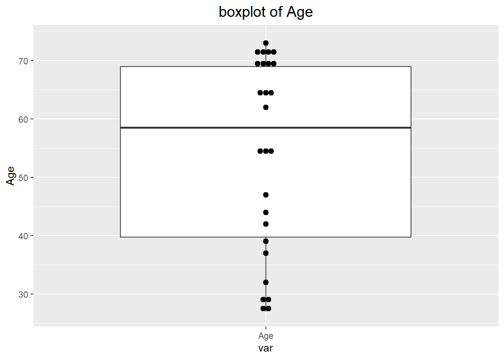
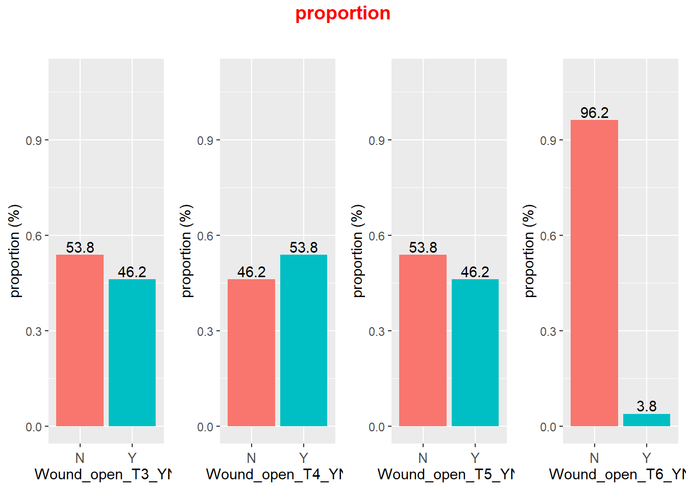
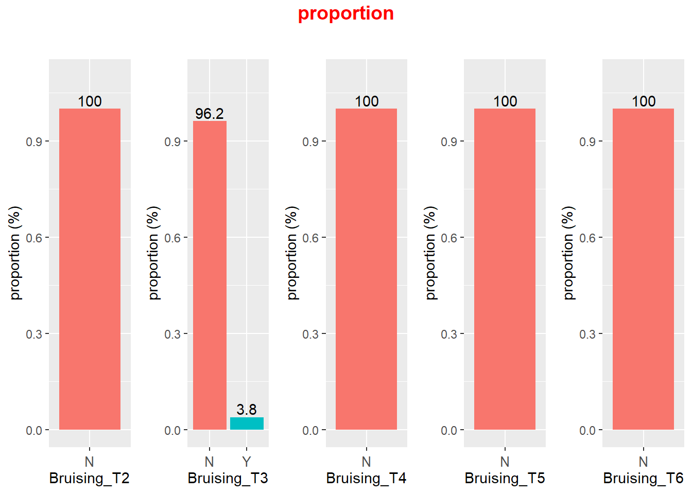

9/14/2022
2022-09-14
Last updated: 2022-12-06
Checks: 6 1
Knit directory: Collaborations/
This reproducible R Markdown analysis was created with workflowr (version 1.7.0). The Checks tab describes the reproducibility checks that were applied when the results were created. The Past versions tab lists the development history.
The R Markdown file has unstaged changes. To know which version of
the R Markdown file created these results, you’ll want to first commit
it to the Git repo. If you’re still working on the analysis, you can
ignore this warning. When you’re finished, you can run
wflow_publish to commit the R Markdown file and build the
HTML.
Great job! The global environment was empty. Objects defined in the global environment can affect the analysis in your R Markdown file in unknown ways. For reproduciblity it’s best to always run the code in an empty environment.
The command set.seed(20210523) was run prior to running
the code in the R Markdown file. Setting a seed ensures that any results
that rely on randomness, e.g. subsampling or permutations, are
reproducible.
Great job! Recording the operating system, R version, and package versions is critical for reproducibility.
Nice! There were no cached chunks for this analysis, so you can be confident that you successfully produced the results during this run.
Great job! Using relative paths to the files within your workflowr project makes it easier to run your code on other machines.
Great! You are using Git for version control. Tracking code development and connecting the code version to the results is critical for reproducibility.
The results in this page were generated with repository version 86cde5a. See the Past versions tab to see a history of the changes made to the R Markdown and HTML files.
Note that you need to be careful to ensure that all relevant files for
the analysis have been committed to Git prior to generating the results
(you can use wflow_publish or
wflow_git_commit). workflowr only checks the R Markdown
file, but you know if there are other scripts or data files that it
depends on. Below is the status of the Git repository when the results
were generated:
Ignored files:
Ignored: analysis/.Rhistory
Unstaged changes:
Modified: analysis/2022_Sep1_Juan.Rmd
Note that any generated files, e.g. HTML, png, CSS, etc., are not included in this status report because it is ok for generated content to have uncommitted changes.
These are the previous versions of the repository in which changes were
made to the R Markdown (analysis/2022_Sep1_Juan.Rmd) and
HTML (docs/2022_Sep1_Juan.html) files. If you’ve configured
a remote Git repository (see ?wflow_git_remote), click on
the hyperlinks in the table below to view the files as they were in that
past version.
| File | Version | Author | Date | Message |
|---|---|---|---|---|
| Rmd | 86cde5a | Han | 2022-12-06 | 12/6/2022 |
| html | 86cde5a | Han | 2022-12-06 | 12/6/2022 |
| Rmd | 0ac794a | Han | 2022-10-04 | 10/4/2022 |
| html | 0ac794a | Han | 2022-10-04 | 10/4/2022 |
| Rmd | 0c57460 | Han | 2022-10-03 | 10/3/2022 |
| html | 0c57460 | Han | 2022-10-03 | 10/3/2022 |
| Rmd | 2e635c3 | Han | 2022-10-03 | 10/3/2022 |
| html | 2e635c3 | Han | 2022-10-03 | 10/3/2022 |
| Rmd | 3351133 | Han | 2022-09-27 | 9/27/2022 |
| html | 3351133 | Han | 2022-09-27 | 9/27/2022 |
| Rmd | ffd4c14 | Han | 2022-09-27 | 9/27/2022 |
| html | ffd4c14 | Han | 2022-09-27 | 9/27/2022 |
| Rmd | ace9b52 | Han | 2022-09-23 | 9/23/2022 |
| html | ace9b52 | Han | 2022-09-23 | 9/23/2022 |
| Rmd | 20980e8 | Han | 2022-09-21 | 9/21/2022 |
| html | 20980e8 | Han | 2022-09-21 | 9/21/2022 |
| Rmd | 3537d34 | Han | 2022-09-16 | 9/16/2022 |
| html | 3537d34 | Han | 2022-09-16 | 9/16/2022 |
| Rmd | 5a2fa8c | Han | 2022-09-15 | 9/15/2022 |
| html | 5a2fa8c | Han | 2022-09-15 | 9/15/2022 |
Distribution of variables
Age

| Mean | SD | SE | Range |
|---|---|---|---|
| 54.15 | 16.55 | 3.25 | (27, 73) |
Gender

Exact binomial test
data: gender_count[1] and sum(gender_count)
number of successes = 14, number of trials = 26, p-value = 0.845
alternative hypothesis: true probability of success is not equal to 0.5
95 percent confidence interval:
0.3337082 0.7341288
sample estimates:
probability of success
0.5384615 - large p value of 0.845 suggests no difference between gender.
Race

- sample size is not large enough to test the difference
Site

Type_bone_graft

Exp_level
summary statistics
- p value of 0.7824 suggests no difference between
Ging_width_T1andGing_width_T6
_T1, _T2, _T3, _T4, _T5 and _T6
trajectory plot
pairwise comparisons
- use paired two sample t test
test different across all time points
ANOVA Table (type III tests)
Effect DFn DFd F p p<.05 ges
1 time 1.59 39.79 8.062 0.002 * 0.17use repeated anova test
small p value indicates significant change over time
_T2-T1, T3-T2, T4-T2, T5-T2 and T6-T2
Width_diff_3mm
- use one sample t test to test each parameter is equal to 0 or not
Buccal_3mm
Lingual_3mm
Vertical_mid
Vertical_max
%vol
VAS_pain
VAS_swell
VAS_mouth_open
OHIP
Wound_open_bl
Wound_open




mean_differencemeans the proportion ofYbetween group1 and group 2
Bleeding



mean_differencemeans the proportion difference ofYbetween group 1 and group 2
T2-T1
T3-T2
T4-T2
T5-T2
T6-T2
sessionInfo()R version 4.1.2 (2021-11-01)
Platform: x86_64-w64-mingw32/x64 (64-bit)
Running under: Windows 10 x64 (build 19044)
Matrix products: default
locale:
[1] LC_COLLATE=English_United States.1252
[2] LC_CTYPE=English_United States.1252
[3] LC_MONETARY=English_United States.1252
[4] LC_NUMERIC=C
[5] LC_TIME=English_United States.1252
attached base packages:
[1] stats graphics grDevices utils datasets methods base
other attached packages:
[1] DT_0.25 rstatix_0.7.0 ggpubr_0.4.0 kableExtra_1.3.4
[5] forcats_0.5.1 stringr_1.4.0 dplyr_1.0.7 purrr_0.3.4
[9] readr_2.1.1 tidyr_1.1.4 tibble_3.1.6 ggplot2_3.3.5
[13] tidyverse_1.3.1
loaded via a namespace (and not attached):
[1] httr_1.4.2 sass_0.4.1 jsonlite_1.7.3 viridisLite_0.4.0
[5] carData_3.0-5 modelr_0.1.8 bslib_0.3.1 assertthat_0.2.1
[9] highr_0.9 cellranger_1.1.0 yaml_2.2.2 pillar_1.6.5
[13] backports_1.4.1 glue_1.6.0 digest_0.6.29 promises_1.2.0.1
[17] ggsignif_0.6.3 rvest_1.0.2 colorspace_2.0-2 cowplot_1.1.1
[21] htmltools_0.5.2 httpuv_1.6.5 pkgconfig_2.0.3 broom_0.7.11
[25] haven_2.4.3 scales_1.1.1 webshot_0.5.2 svglite_2.0.0
[29] whisker_0.4 later_1.3.0 tzdb_0.2.0 git2r_0.29.0
[33] farver_2.1.0 generics_0.1.1 car_3.0-12 ellipsis_0.3.2
[37] withr_2.4.3 cli_3.1.1 magrittr_2.0.1 crayon_1.4.2
[41] readxl_1.3.1 evaluate_0.14 fs_1.5.2 fansi_1.0.2
[45] xml2_1.3.3 tools_4.1.2 hms_1.1.1 lifecycle_1.0.1
[49] munsell_0.5.0 reprex_2.0.1 compiler_4.1.2 jquerylib_0.1.4
[53] systemfonts_1.0.3 rlang_0.4.12 grid_4.1.2 rstudioapi_0.13
[57] htmlwidgets_1.5.4 crosstalk_1.2.0 labeling_0.4.2 rmarkdown_2.11
[61] gtable_0.3.0 abind_1.4-5 DBI_1.1.2 R6_2.5.1
[65] lubridate_1.8.0 knitr_1.37 fastmap_1.1.0 utf8_1.2.2
[69] workflowr_1.7.0 rprojroot_2.0.2 stringi_1.7.6 Rcpp_1.0.8
[73] vctrs_0.3.8 dbplyr_2.1.1 tidyselect_1.1.1 xfun_0.29